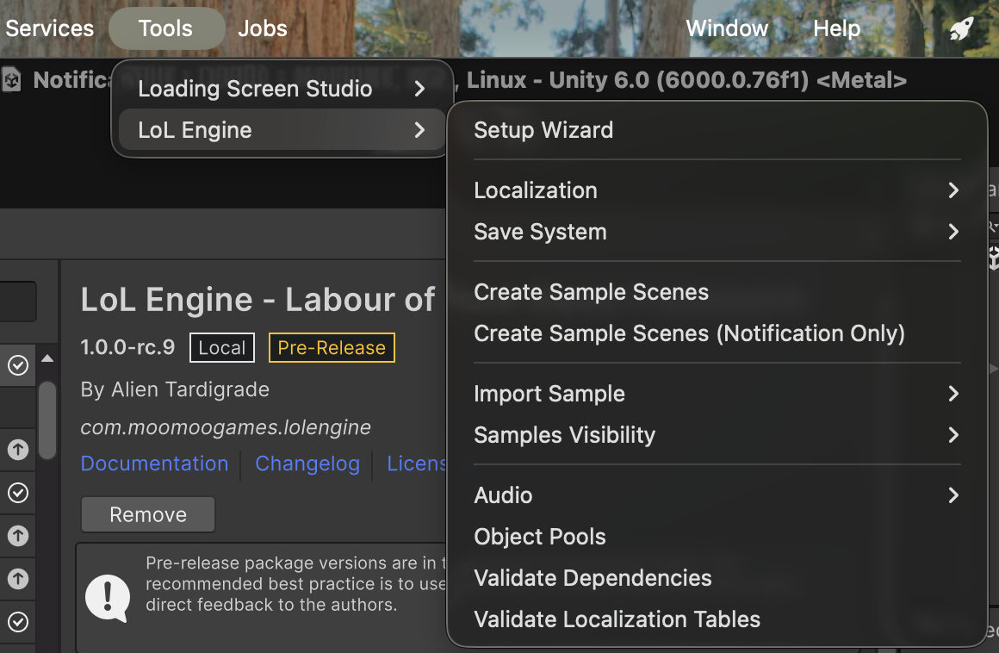
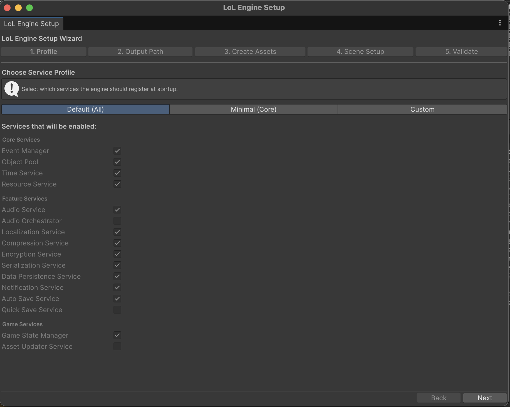
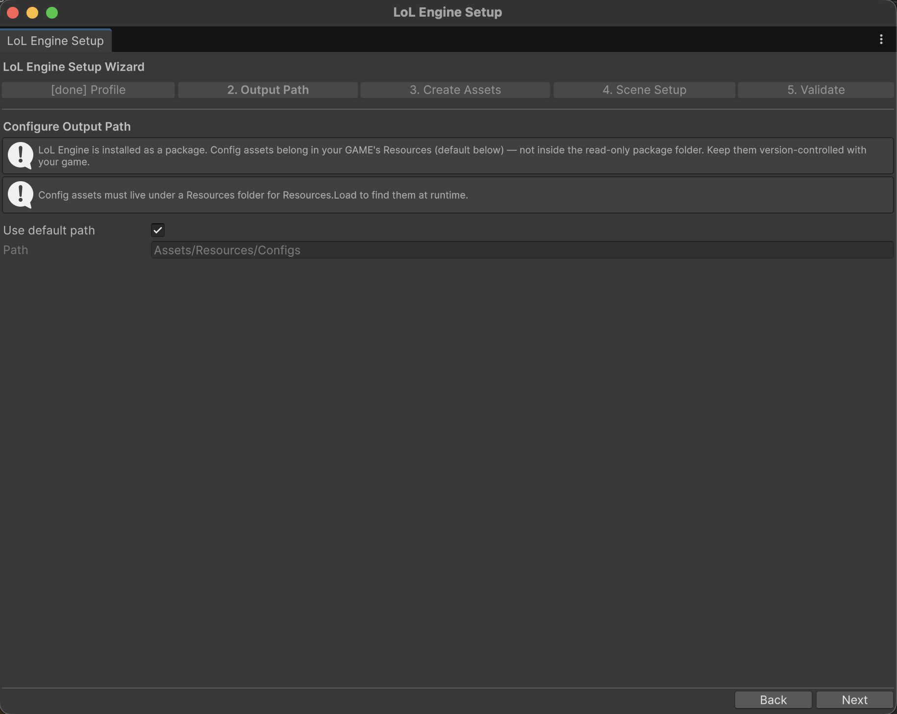
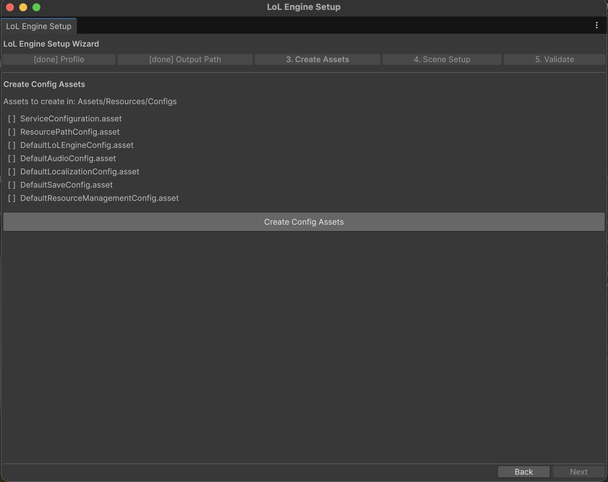
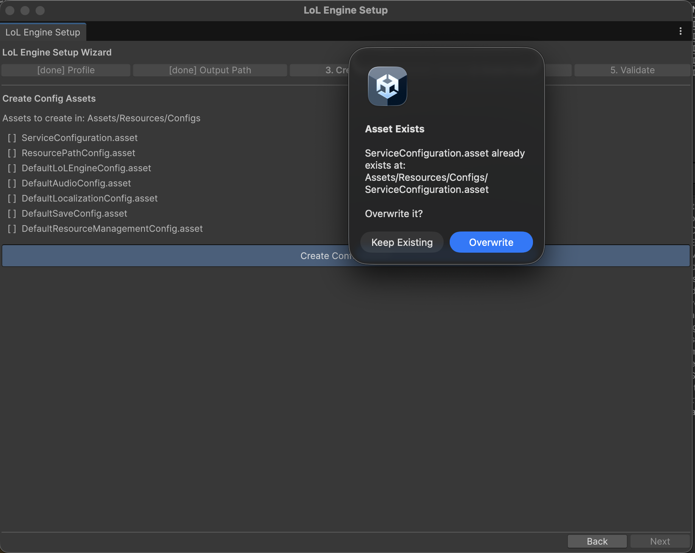
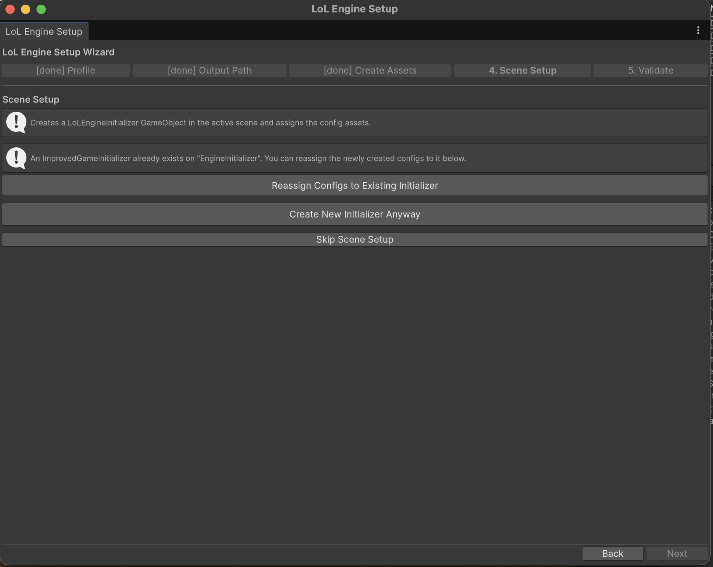
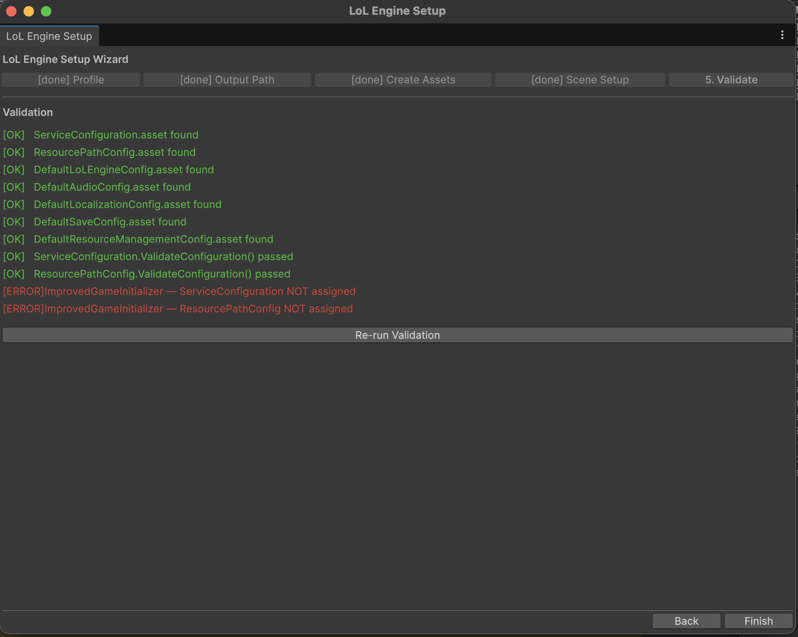

Setup Wizard¶
A guided, five-step window that creates LoL Engine's configuration assets, wires them into a scene initializer, and validates the result — so you don't have to create each asset by hand.
Unity: 6000.0+ — for the current engine version see package.json or CHANGELOG.md
In a hurry? The wizard automates Minimum Required Setup. Everything it does can also be done manually, step by step, in the Getting Started guide.
Overview¶
The Setup Wizard is an editor window that walks you through first-time project setup:
- Profile — choose which services the engine registers at startup.
- Output Path — choose where the generated config assets are written.
- Create Assets — generate the
ServiceConfiguration,ResourcePathConfig, and the per-service config assets. - Scene Setup — create (or reuse) an
ImprovedGameInitializerGameObject and assign the configs to it. - Validate — confirm every asset exists, each config passes validation, and the initializer is wired up.
The wizard never deletes work silently. If a config asset already exists it asks before overwriting, and scene setup is always optional.
Quick Start¶
- Open Tools > LoL Engine > Setup Wizard.
- Leave the profile on Default (All) (or pick Minimal (Core)), then click Next.
- Accept the default Output Path, then click Next.
- Click Create Config Assets, then Next.
- Click Create Initializer in Scene (or Skip Scene Setup), then Next.
- Review the Validate results and click Finish.
You now have a working LoL Engine configuration. Add your entry scene to File > Build Settings as scene 0 and press Play.
Opening the Wizard¶
The wizard lives at Tools > LoL Engine > Setup Wizard.

The window is resizable and can stay open while you work. Use Back and Next at the bottom to move between steps; Next is disabled on a step until that step's required action is complete.
Step 1 — Profile¶
Choose which services the engine registers at startup. The choice is written into the generated ServiceConfiguration asset, and you can change any toggle later in the Inspector.

| Profile | What it enables |
|---|---|
| Default (All) | Core services plus the common feature and game services (Audio, Localization, the save pipeline, Notifications, Auto-Save, Game State Manager). |
| Minimal (Core) | Only the core services: Event Manager, Object Pool, Time Service, Resource Service. |
| Custom | Start from the defaults and toggle individual services on or off. |
The toggles are grouped exactly as they appear in the ServiceConfiguration Inspector:
- Core Services — Event Manager, Object Pool, Time Service, Resource Service.
- Feature Services — Audio Service, Audio Orchestrator, Localization Service, Compression Service, Encryption Service, Serialization Service, Data Persistence Service, Notification Service, Auto Save Service, Quick Save Service.
- Game Services — Game State Manager, Asset Updater Service.
Under Default (All) and Minimal (Core) the toggles are shown read-only as a preview. Switch to Custom to edit them.
Not sure which services your game needs? See the Services Checklist for per-genre recommendations.
Step 2 — Output Path¶
Config assets must live under a Resources folder so the engine can load them at runtime. This step picks that folder.

The default adapts to how the engine is installed:
| Installation | Default path | Why |
|---|---|---|
| Installed as a package (the normal case) | Assets/Resources/Configs |
Config belongs to your game and stays version-controlled with it — not inside the read-only package folder. |
Engine source under Assets/ (package-development repo) |
Assets/LoLEngine/Runtime/Resources/Configs |
Writes the engine's own shipped defaults. If this is actually your game project, switch the path. |
Leave Use default path checked to accept the recommendation. Uncheck it to type a path or pick one with Browse.... The wizard warns if the chosen path is not under a Resources folder, because Resources.Load would not find the assets at runtime.
Step 3 — Create Assets¶
This step generates the config assets in the folder from Step 2. The list shown depends on the services you enabled in Step 1.

Always created:
ServiceConfiguration— the master switch list (populated from your Step 1 choices).ResourcePathConfig— tells the engine where to load configs from; the wizard sets its paths to match your output folder.DefaultLoLEngineConfig— engine-wide settings (save directory, file extensions, and similar).
Created only when the matching service is enabled:
DefaultAudioConfig— when Audio Service is on.DefaultLocalizationConfig— when Localization Service is on.DefaultSaveConfig— when Data Persistence Service is on.DefaultResourceManagementConfig— when Resource Service is on.
Click Create Config Assets to generate them. Each row shows [ ] before creation and [created] after.
If an asset already exists at the target path, the wizard asks before replacing it:

Choose Keep Existing to preserve your current asset (recommended when re-running the wizard on a configured project), or Overwrite to replace it with a fresh default. Either way the wizard records the asset as present and lets you continue.
Step 4 — Scene Setup¶
This step puts an ImprovedGameInitializer in the active scene and assigns the configs you just created, so the engine boots when you press Play.

The available actions depend on the scene:
- Create Initializer in Scene — adds a
LoLEngineInitializerGameObject with theImprovedGameInitializercomponent and assigns theServiceConfigurationandResourcePathConfig. - Reassign Configs to Existing Initializer — shown when the scene already contains an
ImprovedGameInitializer; points it at the newly created configs. - Create New Initializer Anyway — adds a second initializer even though one already exists.
- Skip Scene Setup — continue without touching the scene (for example, when your initializer lives in a different scene).
Scene setup is optional. If you skip it, the engine still has its configs — you just need an ImprovedGameInitializer referencing them somewhere in your boot scene before the engine can start. See Game Initializer.
Step 5 — Validate¶
The final step re-checks the project and reports what it finds, so you can fix problems before pressing Play.

Each line carries a severity:
| Marker | Meaning |
|---|---|
[OK] |
The check passed. |
[WARN] |
Non-blocking — for example, no initializer in the scene because scene setup was skipped. |
[ERROR] |
Needs attention — for example, an ImprovedGameInitializer exists but has no ServiceConfiguration assigned. |
The validator checks that every expected asset exists, runs ValidateConfiguration() on the ServiceConfiguration and ResourcePathConfig, and confirms the scene initializer has both configs assigned. Use Re-run Validation after fixing an issue. The [ERROR] lines above are expected when scene setup was skipped — complete Step 4 (or assign the configs to your initializer manually) and re-run to clear them.
Click Finish to close the wizard.
After the Wizard¶
- Open your entry scene (the one with the
ImprovedGameInitializer). - Open File > Build Settings and make that scene index 0.
- Press Play — the console reports each service initializing.
To change which services run later, select the generated ServiceConfiguration asset and edit its toggles in the Inspector. To change asset load paths, edit ResourcePathConfig. Neither requires re-running the wizard.
Troubleshooting¶
Next is greyed out on Create Assets. You must click Create Config Assets before the wizard will advance — the step is gated on assets existing.
Validation reports an asset is missing.
The output path in Step 2 and the path the validator checks must match. Re-run from Step 2 with the same path, or move the assets under the expected Resources/Configs folder.
Validation reports the initializer has no config assigned. Either run Step 4's Create Initializer in Scene / Reassign Configs to Existing Initializer, or select the initializer and assign the configs in the Inspector, then Re-run Validation.
The configs don't load at runtime.
Confirm the output folder is under a Resources folder and that ResourcePathConfig points at it. See Resource Management and Troubleshooting.
Related Docs¶
- Getting Started — the full manual setup walkthrough the wizard automates
- Quickstart (5 min) — install to first sound
- Editor Menu Reference — every Tools > LoL Engine command
- Game Initializer — the
ImprovedGameInitializerthe wizard creates - Configuration —
ServiceConfigurationand the config assets in depth - Services Checklist — which services to enable per genre